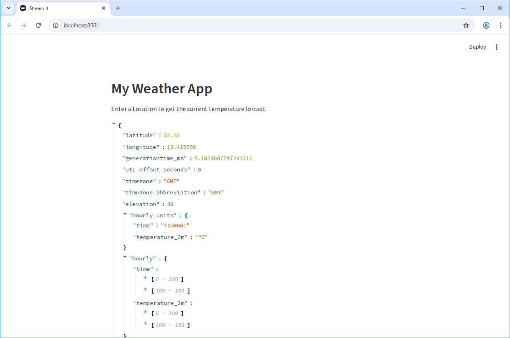
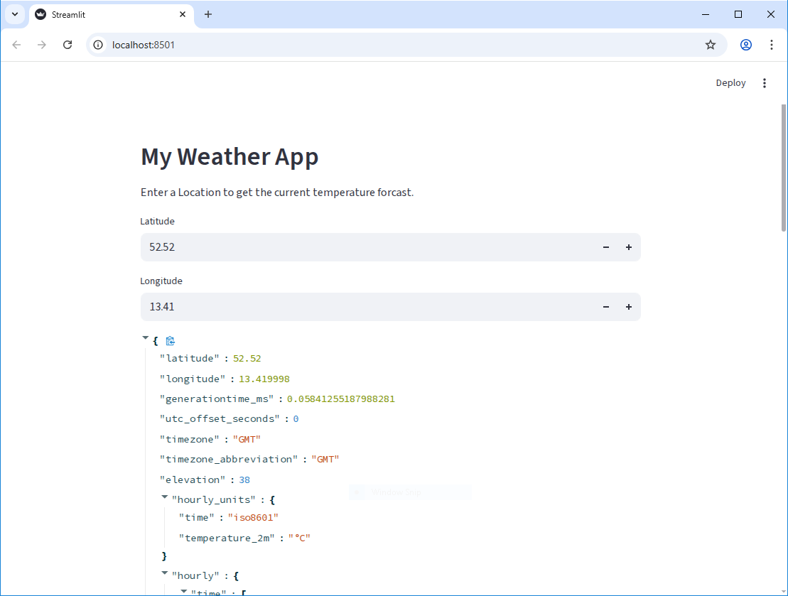
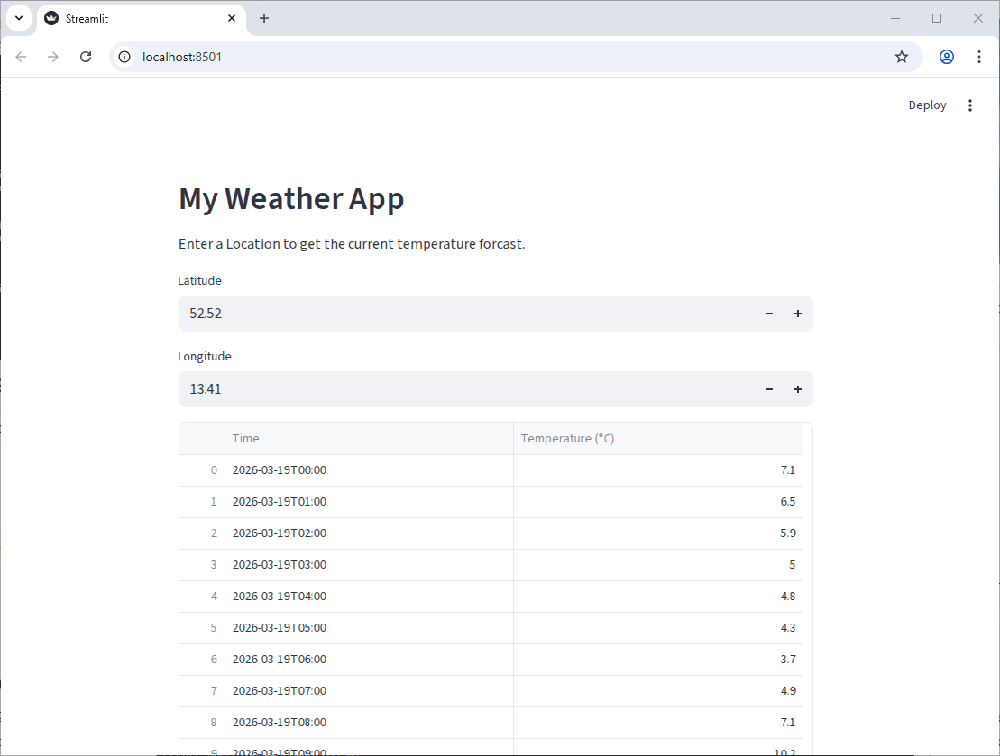
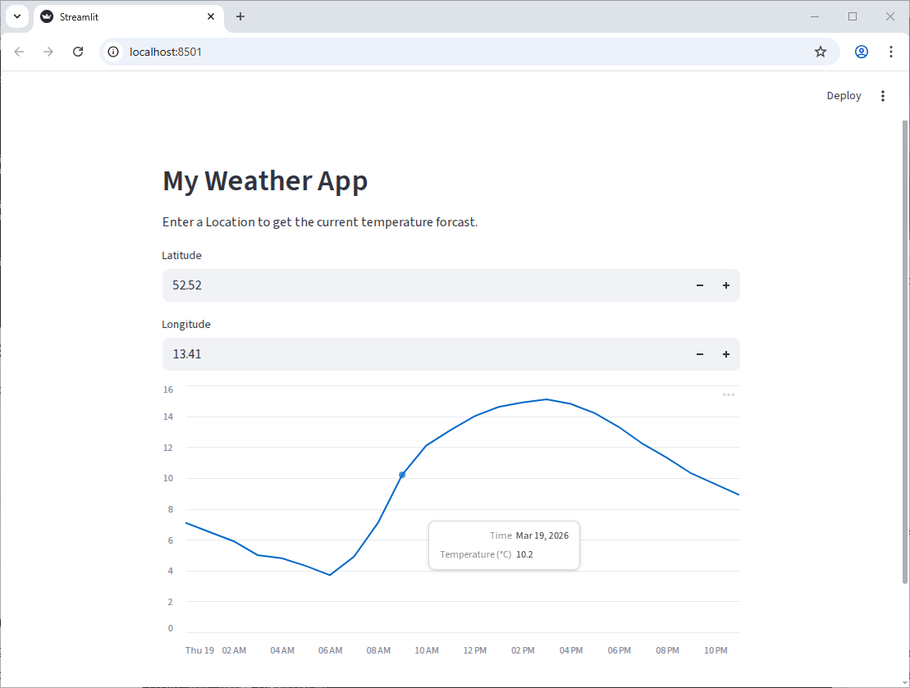
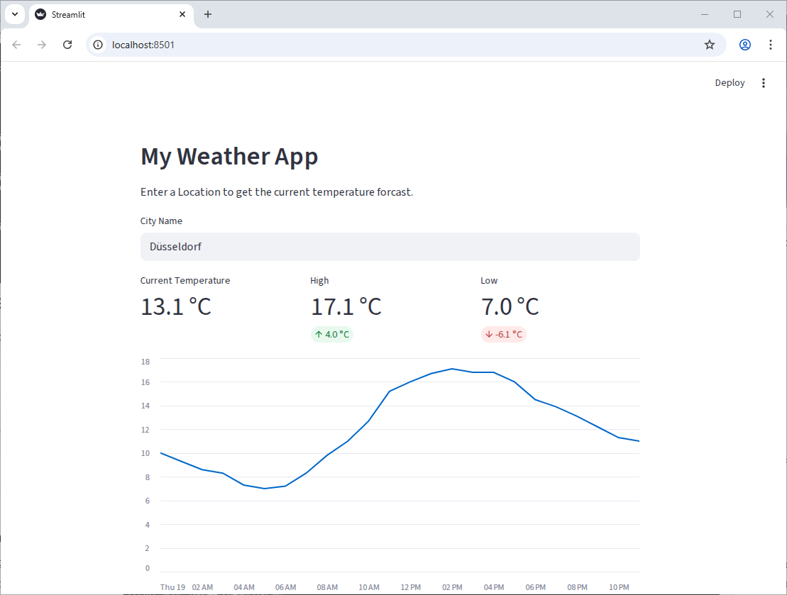

Getting Data from an API
Last updated on 2026-03-24 | Edit this page
Overview
Questions
- How can we incorporate live data into our application?
- What is an API and how can we use it to get data from a web service?
- How can we use Streamlit widgets to get user input and use that input to make API requests?
- How can we display data from an API?
Objectives
- Create a Streamlit app that makes requests to a web API and displays the data
- Use Streamlit widgets to get user input and use that input to make API requests
- Display data from an API in a Streamlit app using both
st.writeand charts
What is an API?
API stands for “Application Programming Interface”. An API is a set of rules and protocols that allows software to comunicate with each other. For our purposes here, an API is a way for us to get data from a web service. The data is typically (but not always!) return in JSON format, which allows us to easily work with it in Python.
Getting Data from an API
Let’s start fresh with a new file. Use Ctrl-C to close our basic
streamlit app, then let’s create a new file called
weather_app.py and open it in your code editor. We can
start by just adding some simple text to our app to make sure it’s
working:
PYTHON
import streamlit as st
st.header("My Weather App")
st.write("Enter a Location to get the current temperature forcast.")We’re going to use an open API from Open-Meteo to get weather data. Because it’s open, we won’t need an API key or credentials to access it. In essence, an API is just an address on the internet that will return data. Looking at the Open-Meteo API documentation, we can see that we can get the weather forcast for a specific location by sending request like this:
https://api.open-meteo.com/v1/forecast?latitude=52.52&longitude=13.41&hourly=temperature_2mPutting that URL into our browser will return a JSON object:
JSON
{
"latitude": 52.52,
"longitude": 13.419998,
"generationtime_ms": 0.0736713409423828,
"utc_offset_seconds": 0,
"timezone": "GMT",
"timezone_abbreviation": "GMT",
"elevation": 38,
"hourly_units": {
"time": "iso8601",
"temperature_2m": "°C"
},
"hourly": {
"time": [
"2026-03-18T00:00",
"2026-03-18T01:00",
"2026-03-18T02:00",
"2026-03-18T03:00",
...Looking at the URL, there’s a question mark (?) followed
by a series of key-value pairs separated by ampersands
(&). This is called the “query string” and it’s used to
specify the parameters for our API request. Let’s add this query to our
Streamlit app and see how it returns the data. We need another library
for this - requests. This is a popular library for making
HTTP requests in python.
In our first episode, we set up uv and added the
requests package to our project. If you haven’t done that
yet, run the command uv add requests in your terminal to
add it to your project.
PYTHON
import requests
import streamlit as st
st.header("My Weather App")
st.write("Enter a Location to get the current temperature forcast.")
url = "https://api.open-meteo.com/v1/forecast?latitude=52.52&longitude=13.41&hourly=temperature_2m&forecast_days=1"
response = requests.get(url)
data = response.json()
st.write(data)When you run this code, you should see the JSON data from the API displayed in your Streamlit app.

When using APIs, it’s good practice to check the API documentation to see if there are any restrictions on how many requests you can make in a certain time period (called “rate limits”), or if there are any specific parameters you need to include in your request. It’s important to be a good API consumer and follow any guidelines set by the API provider.
If we were requesting lots of data, or making the same request multiple times, we might want to add caching to our app to avoid hitting rate limits or to improve performance. But for this simple app, we’ll just make the request directly without caching.
Using a widget to get user input
In the previous episode we saw how to use Streamlit widgets to get
user input. Let’s add a pair of widgets to let the user specify the
latitude and longitude for the location they want to get the weather
forcast for. We can use st.number_input to get numeric
input from the user:
PYTHON
import requests
import streamlit as st
st.header("My Weather App")
st.write("Enter a Location to get the current temperature forcast.")
latitude = st.number_input("Latitude", key="latitude", value=52.52)
longitude = st.number_input("Longitude", key="longitude", value=13.41)
url = f"https://api.open-meteo.com/v1/forecast?latitude={latitude}&longitude={longitude}&hourly=temperature_2m&forecast_days=1"
response = requests.get(url)
data = response.json()
st.write(data)Now, as you change the values in the number inputs, you can see the API data update in real time to show the weather forcast for the new location.

Displaying a chart with the API data
Of course, we want to do something more interesting than just displaying a list of numbers. Let’s co convert the data into a Pandas DataFrame:
PYTHON
import pandas as pd
import requests
import streamlit as st
st.header("My Weather App")
st.write("Enter a Location to get the current temperature forcast.")
latitude = st.number_input("Latitude", key="latitude", value=52.52)
longitude = st.number_input("Longitude", key="longitude", value=13.41)
url = f"https://api.open-meteo.com/v1/forecast?latitude={latitude}&longitude={longitude}&hourly=temperature_2m&forecast_days=1"
response = requests.get(url)
data = response.json()
df = pd.DataFrame(data["hourly"]).rename(columns={"time": "Time", "temperature_2m": "Temperature (°C)"})
st.write(df)
Getting there, but we can do better! Since we have data with a time
component, it would be nice to display it as a line chart. Much like the
st.write function, Streamlit can do a fair bit of guessing
about how to display our data based on the data type. Let’s tell it that
the index of the dataframe is Time and pass the dataframe
to st.line_chart:
PYTHON
import pandas as pd
import requests
import streamlit as st
st.header("My Weather App")
st.write("Enter a Location to get the current temperature forcast.")
latitude = st.number_input("Latitude", key="latitude", value=52.52)
longitude = st.number_input("Longitude", key="longitude", value=13.41)
url = f"https://api.open-meteo.com/v1/forecast?latitude={latitude}&longitude={longitude}&hourly=temperature_2m&forecast_days=1"
response = requests.get(url)
data = response.json()
df = pd.DataFrame(data["hourly"]).rename(columns={"time": "Time", "temperature_2m": "Temperature (°C)"})
df["Time"] = pd.to_datetime(df["Time"])
df.set_index("Time", inplace=True)
st.line_chart(df)You should get something like this:

Cleaning up our code
The API URL is hard to read and has a lot of string concatenation. We
can use the params argument of requests.get to
make this cleaner.
PYTHON
import pandas as pd
import requests
import streamlit as st
API_URL = "https://api.open-meteo.com/v1/"
st.header("My Weather App")
st.write("Enter a Location to get the current temperature forcast.")
latitude = st.number_input("Latitude", key="latitude", value=52.52)
longitude = st.number_input("Longitude", key="longitude", value=13.41)
params = {
"latitude": latitude,
"longitude": longitude,
"hourly": "temperature_2m",
"forecast_days": 1
}
response = requests.get(f"{API_URL}forecast", params=params)
data = response.json()
df = pd.DataFrame(data["hourly"]).rename(columns={"time": "Time", "temperature_2m": "Temperature (°C)"})
df["Time"] = pd.to_datetime(df["Time"])
df.set_index("Time", inplace=True)
st.line_chart(df)Challenge 1: Fine-tuning Widgets
Our latitude and longitude inputs currently allow the user to enter in any number, which means we can make requests to the API with invalid coordinates. Use the Streamlit Documentation for st.number_input to prevent the user for entering in invalid coordinates.
(Latitude should be between -90 and 90, and longitude should be between -180 and 180.)
You can use the min_value and max_value
parameters of st.number_input.
Challenge 2: Geocoding
It’s not very user-friendly to have to enter in the exact latitude and longitude for a location. It would be much nicer if the user could just enter in a city name and have the app figure out the latitude and longitude for that city. Looking at the Open-Meteo documentation, we can see that they only let us provide data as coordinates, but there is another endpoint we can use to convert a city name into coordinates: https://open-meteo.com/en/docs/geocoding-api
Replace the latitude and longitude number inputs with a single text input where the user can enter a city name. Then, use the geocoding API to convert that city name into latitude and longitude coordinates, which you can then use to get the weather data as before.
The geocoding API uses a slightly different URL and parameters than the weather API, so you’ll need to make a separate API request to get the coordinates before you can make the request to get the weather data.
Create a text input widget for the city name, then make a request to the geocoding API with the city name as the “name” parameter. The API will return a JSON object with a “results” key, which is a list of potential matches for the city name. You can take the first result and extract the “latitude” and “longitude” from it to use in the weather API request.
PYTHON
import pandas as pd
import requests
import streamlit as st
GEOCODING_API_URL = "https://geocoding-api.open-meteo.com/v1/"
WEATHER_API_URL = "https://api.open-meteo.com/v1/"
st.header("My Weather App")
st.write("Enter a Location to get the current temperature forcast.")
# Create a text input for the city name
city_name = st.text_input("City Name", key="city_name", value="Düsseldorf")
# We only care about the first result, so we'll set count=1 to only get one result back from the API
params = {
"name": city_name,
"count": 1
}
# Make a request to the geocoding endpoint to get the coordinates for the city name
response = requests.get(f"{GEOCODING_API_URL}search", params=params)
data = response.json()
# Extract the latitude and longitude from the API response
latitude = data["results"][0]["latitude"]
longitude = data["results"][0]["longitude"]
params = {
"latitude": latitude,
"longitude": longitude,
"hourly": "temperature_2m",
"forecast_days": 1
}
response = requests.get(f"{WEATHER_API_URL}forecast", params=params)
data = response.json()
df = pd.DataFrame(data["hourly"]).rename(columns={"time": "Time", "temperature_2m": "Temperature (°C)"})
df["Time"] = pd.to_datetime(df["Time"])
df.set_index("Time", inplace=True)
st.line_chart(df)Challenge 3: Adding Metrics
In addition to the line chart, it would be great to show some metrics
at the top of the app, like the current temperature, and the high and
low for the day. Use the st.metric component to add these
metrics to the top of the app and st.columns to put them
side by side.
Some code snippets you might find useful:
PYTHON
# Get the current temperature (the first value in the "Temperature (°C)" column, where the "Time"
# index is greater than the current time)
current_temp = df[df.index > pd.Timestamp.now()]["Temperature (°C)"].iloc[0]
# Get the high and low for the day (the max and min of the "Temperature (°C)" column)
high_temp = df["Temperature (°C)"].max()
low_temp = df["Temperature (°C)"].min()
# The "format" parameter of st.metric takes a string like this: "%d.4 kgs" where the "%d.4" part is
# replaced with the value of the metric, formatted to 4 decimal places.Bonus: Add a delta to the high and low metrics to show how much they differ from the current temperature.
Your final app should look something like this:

There are three parameters in the st.metric function
that are useful for this: label, value, and
format. (four, if you include delta)
PYTHON
import pandas as pd
import requests
import streamlit as st
GEOCODING_API_URL = "https://geocoding-api.open-meteo.com/v1/"
WEATHER_API_URL = "https://api.open-meteo.com/v1/"
st.header("My Weather App")
st.write("Enter a Location to get the current temperature forcast.")
# Create a text input for the city name
city_name = st.text_input("City Name", key="city_name", value="Düsseldorf")
# We only care about the first result, so we'll set count=1 to only get one result back from the API
params = {"name": city_name, "count": 1}
# Make a request to the geocoding endpoint to get the coordinates for the city name
response = requests.get(f"{GEOCODING_API_URL}search", params=params)
data = response.json()
# Extract the latitude and longitude from the API response
latitude = data["results"][0]["latitude"]
longitude = data["results"][0]["longitude"]
params = {
"latitude": latitude,
"longitude": longitude,
"hourly": "temperature_2m",
"forecast_days": 1,
}
response = requests.get(f"{WEATHER_API_URL}forecast", params=params)
data = response.json()
df = pd.DataFrame(data["hourly"]).rename(
columns={"time": "Time", "temperature_2m": "Temperature (°C)"}
)
df["Time"] = pd.to_datetime(df["Time"])
df.set_index("Time", inplace=True)
# Get the current temperature (the first value in the "Temperature (°C)" column, where the "Time"
# index is greater than the current time)
current_temp = df[df.index > pd.Timestamp.now()]["Temperature (°C)"].iloc[0]
# Get the high and low for the day (the max and min of the "Temperature (°C)" column)
high_temp = df["Temperature (°C)"].max()
low_temp = df["Temperature (°C)"].min()
left_column, center_column, right_column = st.columns(3)
with left_column:
st.metric("Current Temperature", current_temp, format="%.1f °C")
with center_column:
st.metric("High", high_temp, format="%.1f °C", delta=high_temp - current_temp)
with right_column:
st.metric("Low", low_temp, format="%.1f °C", delta=low_temp - current_temp)
st.line_chart(df)- APIs allow us to get data from web services and incorporate it into our applications.
- We can use the
requestslibrary to make HTTP requests to APIs and get data back in JSON format. - Streamlit widgets can be used to get user input and use that input to make API requests, allowing us to create interactive applications that incorporate live data.